{kind=link}
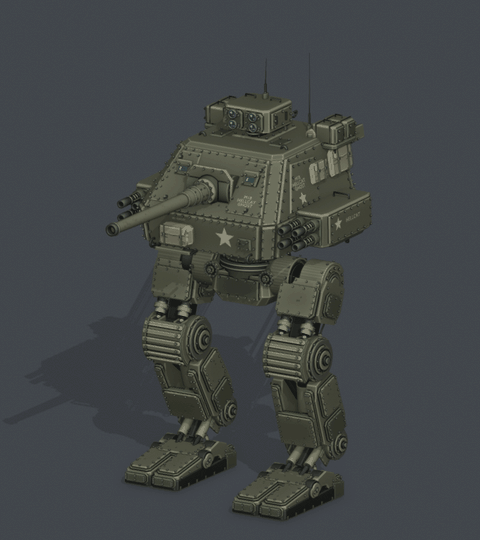
01 Walk
LOOP · 2.00s · Locomotion
Frames 1–49 · 0.431 units/s
Original Blender Action
HC ANIM | 01 Walk38 animation previews, grouped by movement and numbered in viewing order. Choose a group below to jump to it.
Game controller setup: gameplay Actions retain a stationary root. Preview travel comes from a temporary controller simulation. Hill clips use an 8° reference slope; terrain clips are authored examples to blend with runtime foot IK.
Weapon aiming: the cannon and each armored pod have ±20° elevation relative to the hull. Clips 36–37 show continued tracking after the hull reaches its ±5° aiming allocation; clip 38 shows independent targets. These three previews show the updated pod spacing; earlier motion previews retain their prior model revision.

LOOP · 2.00s · Locomotion
Frames 1–49 · 0.431 units/s
HC ANIM | 01 Walk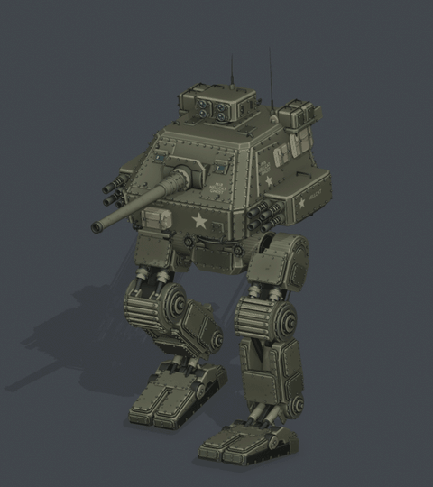
LOOP · 1.17s · Locomotion
Frames 1–29 · 2.462 units/s
HC ANIM | 02 Run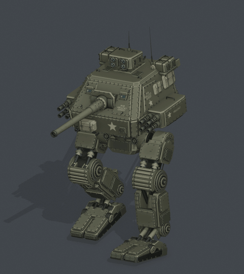
LOOP · 0.83s · Locomotion
Frames 1–21 · 4.880 units/s
HC ANIM | 03 Sprint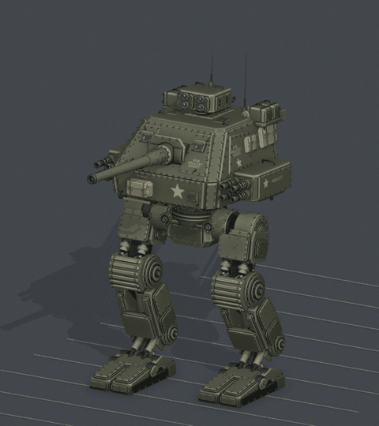
LOOP · 2.00s · Backward locomotion
Frames 1–49 · -0.310 units/s
HC ANIM | 22 Walk Backward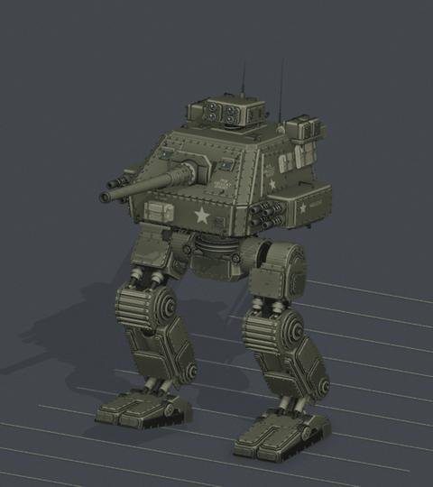
LOOP · 1.17s · Backward locomotion
Frames 1–29 · -1.526 units/s
HC ANIM | 23 Run Backward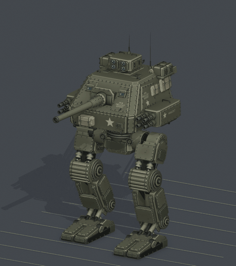
ONE-SHOT · 4.00s · Braking
Frames 1–97 · 0.431 units/s
HC ANIM | 24 Walk To Stop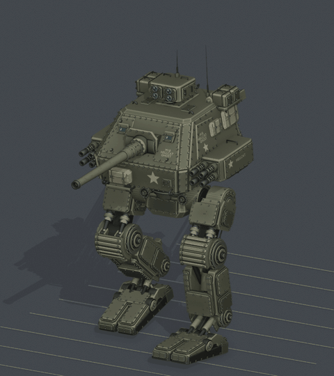
ONE-SHOT · 2.92s · Braking
Frames 1–71 · 2.462 units/s
HC ANIM | 25 Run To Stop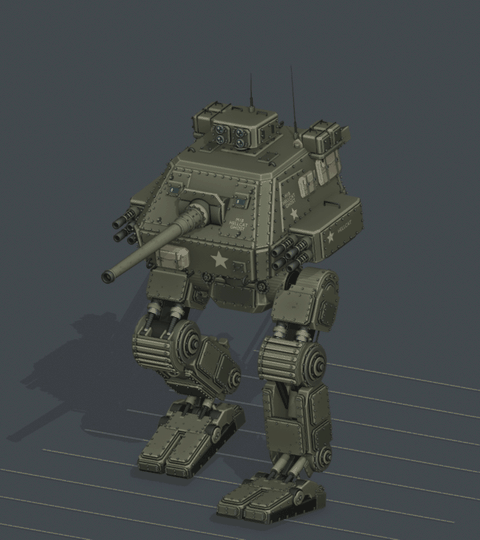
ONE-SHOT · 2.50s · Braking
Frames 1–61 · 4.880 units/s
HC ANIM | 26 Sprint To Stop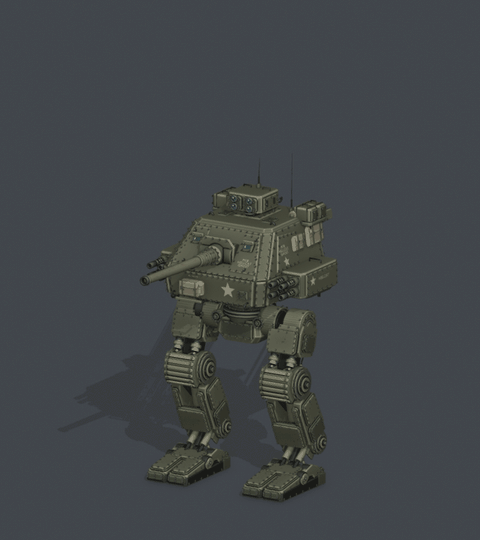
ONE-SHOT · 3.50s · Jump
Frames 1–85 · 0.000 units/s
HC ANIM | 04 Jump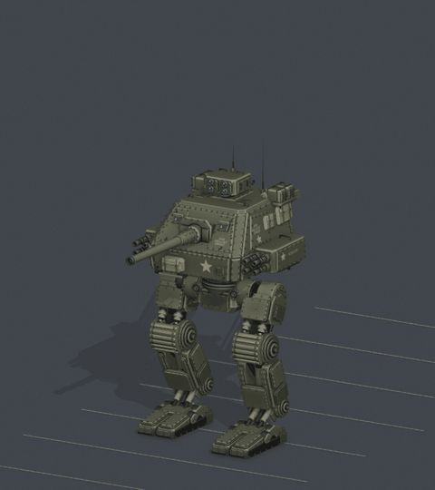
ONE-SHOT · 5.50s · Jump transition
Frames 1–133 · 0.431 units/s
HC ANIM | 08 Walk Into Jump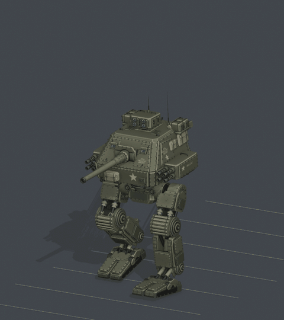
ONE-SHOT · 4.42s · Jump transition
Frames 1–107 · 2.462 units/s
HC ANIM | 07 Run Into Jump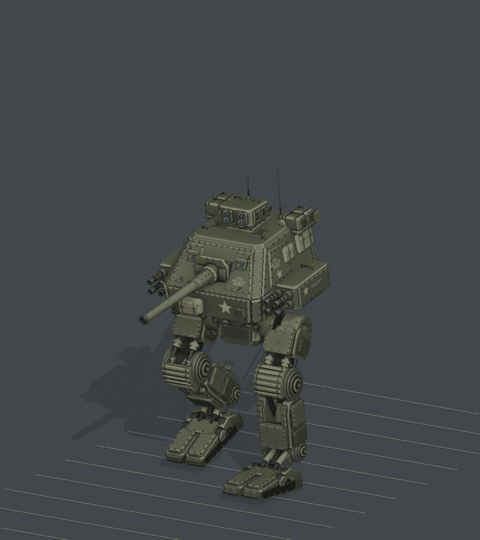
ONE-SHOT · 3.33s · Jump transition
Frames 1–81 · 4.880 units/s
HC ANIM | 21 Sprint Into Jump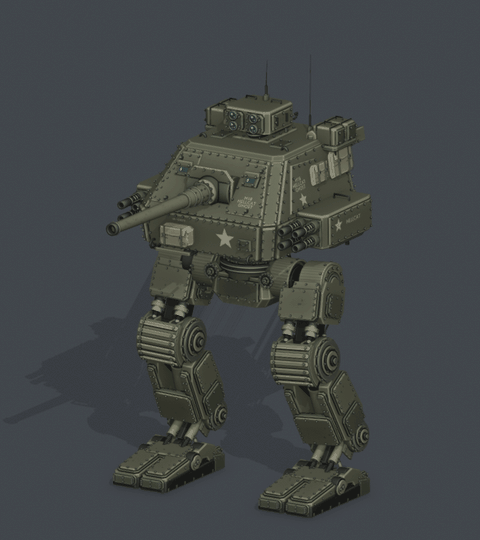
LOOP · 2.00s · Locomotion
Frames 1–49 · 0.278 units/s
HC ANIM | 05 Side Step Left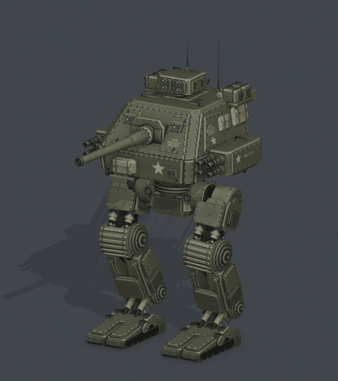
LOOP · 2.00s · Locomotion
Frames 1–49 · 0.278 units/s
HC ANIM | 06 Side Step Right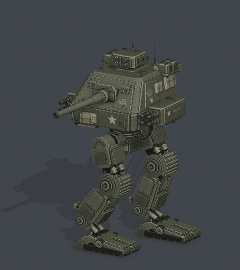
LOOP · 1.67s · Locomotion + fire
Frames 1–41 · 0.737 units/s
HC ANIM | 09 Strafe Fire Left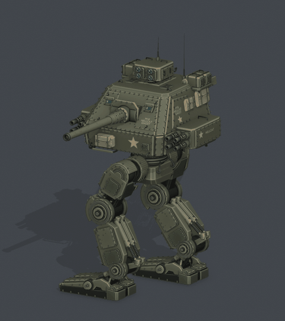
LOOP · 1.67s · Locomotion + fire
Frames 1–41 · 0.737 units/s
HC ANIM | 10 Strafe Fire Right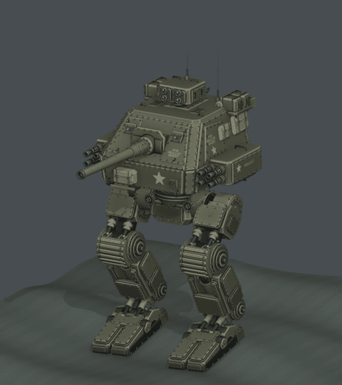
LOOP · 8.00s · Rough terrain
Frames 1–193 · 0.431 units/s
HC ANIM | 27 Walk Rough Terrain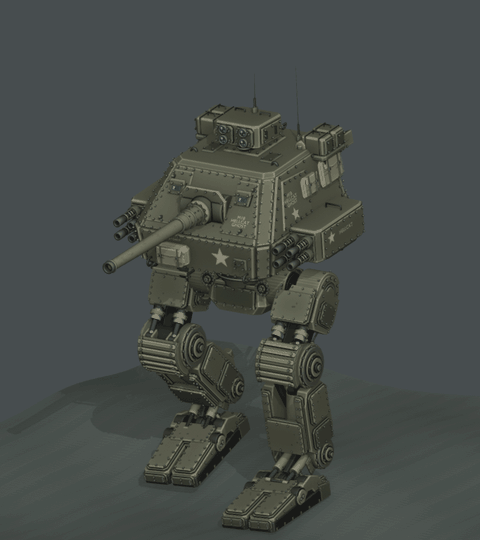
LOOP · 2.33s · Rough terrain
Frames 1–57 · 2.462 units/s
HC ANIM | 28 Run Rough Terrain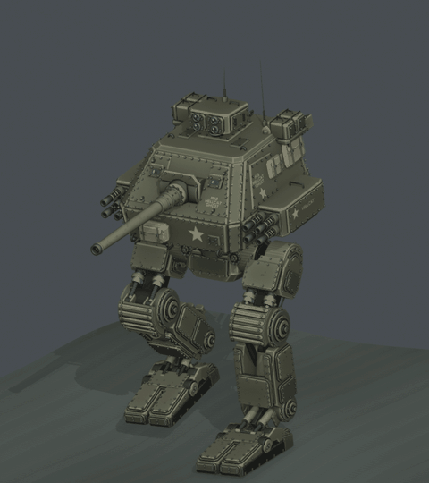
LOOP · 1.67s · Rough terrain
Frames 1–41 · 4.880 units/s
HC ANIM | 29 Sprint Rough Terrain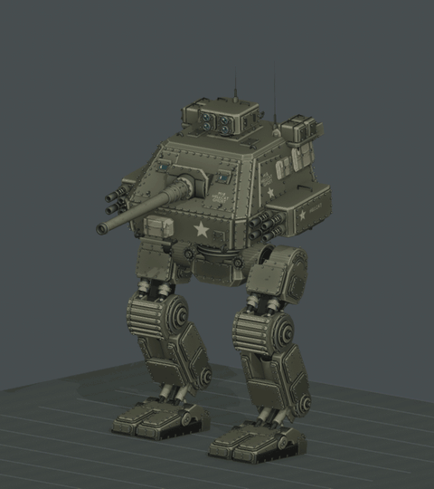
LOOP · 4.00s · Slope locomotion
Frames 1–97 · 0.431 units/s
HC ANIM | 30 Walk Uphill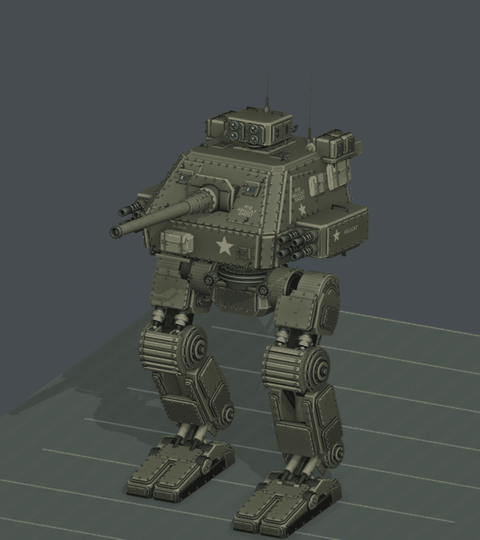
LOOP · 4.00s · Slope locomotion
Frames 1–97 · 0.431 units/s
HC ANIM | 31 Walk Downhill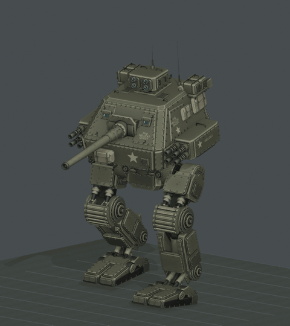
LOOP · 2.33s · Slope locomotion
Frames 1–57 · 2.462 units/s
HC ANIM | 32 Run Uphill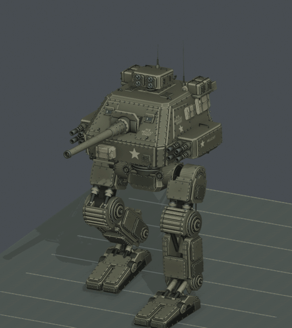
LOOP · 2.33s · Slope locomotion
Frames 1–57 · 2.462 units/s
HC ANIM | 33 Run Downhill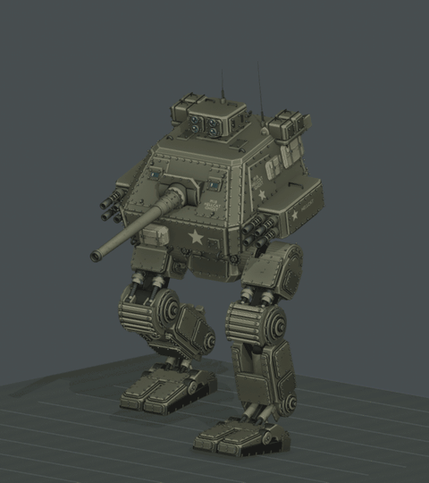
LOOP · 1.67s · Slope locomotion
Frames 1–41 · 4.880 units/s
HC ANIM | 34 Sprint Uphill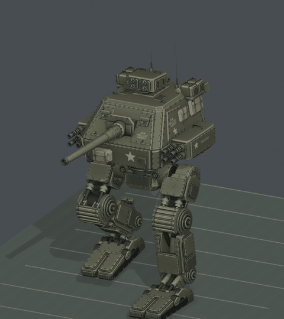
LOOP · 1.67s · Slope locomotion
Frames 1–41 · 4.880 units/s
HC ANIM | 35 Sprint DownhillLOOP · 4.00s · Upper body additive
Frames 1–97 · 0.000 units/s
HC ANIM | 11 Hull IdleLOOP · 4.00s · Upper body additive
Frames 1–97 · 0.000 units/s
HC ANIM | 12 Hull ScanONE-SHOT · 2.50s · Upper body additive
Frames 1–61 · 0.000 units/s
HC ANIM | 13 Hull Turn Left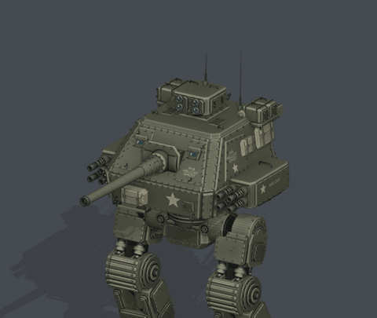
ONE-SHOT · 2.50s · Upper body additive
Frames 1–61 · 0.000 units/s
HC ANIM | 14 Hull Turn Right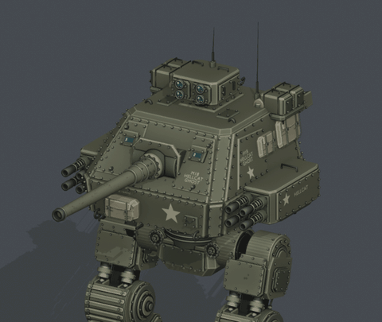
ONE-SHOT · 2.50s · Upper body additive
Frames 1–61 · 0.000 units/s
HC ANIM | 15 Hull Pitch UpONE-SHOT · 2.50s · Upper body additive
Frames 1–61 · 0.000 units/s
HC ANIM | 16 Hull Pitch Down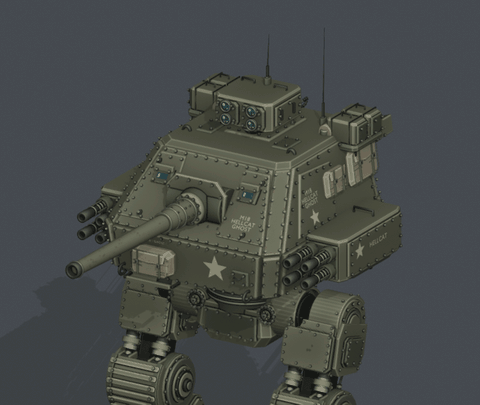
ONE-SHOT · 2.50s · Upper body additive
Frames 1–61 · 0.000 units/s
HC ANIM | 17 Hull Lean LeftONE-SHOT · 2.50s · Upper body additive
Frames 1–61 · 0.000 units/s
HC ANIM | 18 Hull Lean Right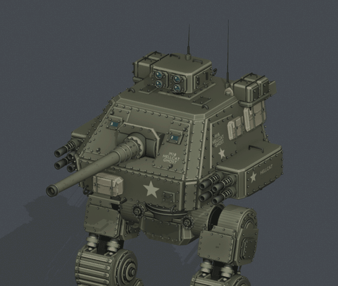
ONE-SHOT · 2.50s · Upper body additive
Frames 1–61 · 0.000 units/s
HC ANIM | 19 Hull Brace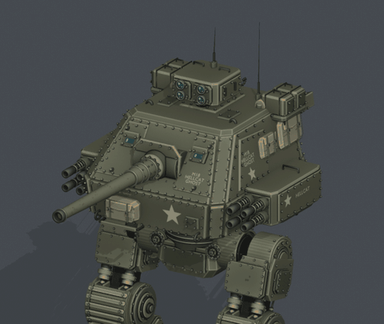
ONE-SHOT · 1.67s · Upper body additive
Frames 1–41 · 0.000 units/s
HC ANIM | 20 Hull Recoil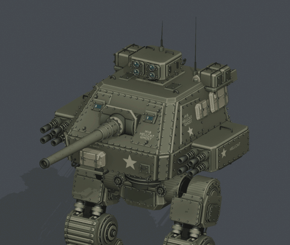
ONE-SHOT · 4.67s · Upper body additive
Frames 1–113 · 0.000 units/s
HC ANIM | 36 Aim Track Up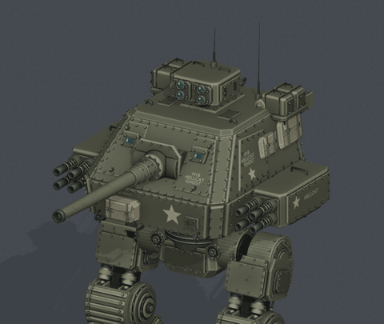
ONE-SHOT · 4.67s · Upper body additive
Frames 1–113 · 0.000 units/s
HC ANIM | 37 Aim Track Down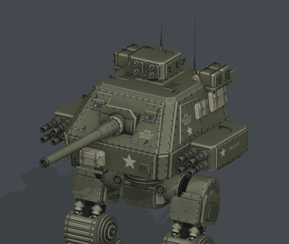
ONE-SHOT · 4.67s · Upper body additive
Frames 1–113 · 0.000 units/s
HC ANIM | 38 Independent Weapon Aim{kind=link}
{kind=link}
{kind=link}
{kind=link}
{kind=link}
{kind=link}
{kind=link}
{kind=link}
{kind=link}
{kind=link}
{kind=link}
{kind=link}
{kind=link}
{kind=link}
{kind=link}
{kind=link}
{kind=link}
{kind=link}
{kind=link}
{kind=link}
{kind=link}
{kind=link}
{kind=link}
{kind=link}
{kind=link}
{kind=link}
{kind=link}
{kind=link}
{kind=link}
{kind=link}
{kind=link}
{kind=link}
{kind=link}
{kind=link}
{kind=link}
{kind=link}
{kind=link}